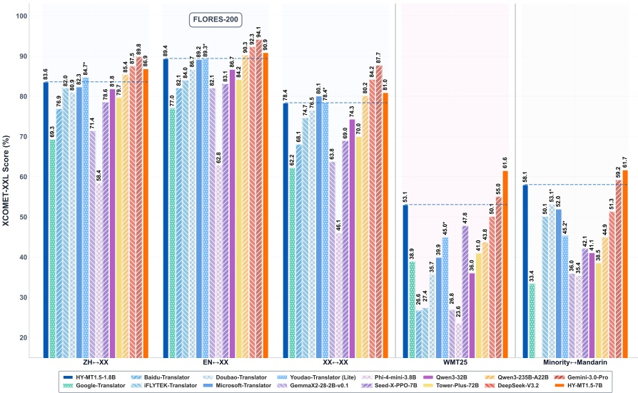
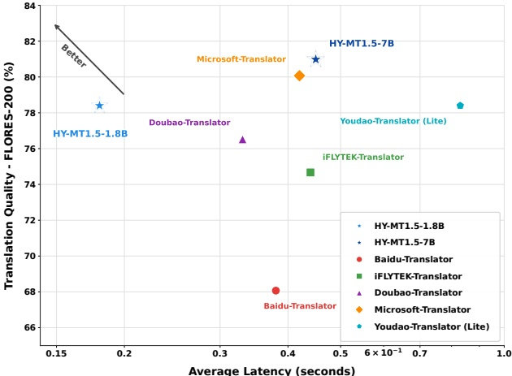

Trang 1
HY-MT1.5 Technical Report
Tencent Hunyuan Team
Abstract
Trong báo cáo này, chúng tôi giới thiệu các mô hình dịch thuật mới nhất của chúng tôi, HY-MT1.5-1.8B và HY-MT1.5-7B, một bộ mô hình dịch thuật bằng máy mới, được phát triển thông qua một khung đào tạo toàn diện, được thiết kế để đạt hiệu suất dịch thuật cao. Phương pháp của chúng tôi điều phối một quy trình nhiều giai đoạn, tích hợp việc đào tạo trước chung và tập trung vào dịch thuật, tinh chỉnh có giám sát, cô đọng theo chính sách, và học tăng cường. Mô hình HY-MT1.5-1.8B, với 1.8 tỷ tham số, thể hiện hiệu quả tham số đáng kinh ngạc, vượt trội hơn đáng kể so với các mô hình nguồn mở lớn hơn (ví dụ: Tower-Plus-72B, Qwen3-32B) và các API thương mại phổ biến (ví dụ: Microsoft Translator, Doubao Translator) trong các nhiệm vụ dịch thuật tiêu chuẩn từ tiếng Trung sang tiếng Anh và ngược lại. Nó đạt được khoảng 90% hiệu suất của các mô hình độc quyền siêu lớn như Gemini-3.0-Pro, trong khi vẫn còn kém hơn một chút so với Gemini-3.0-Pro trên các bộ dữ liệu WMT25 và tiếng Mandarin thiểu số, nhưng vẫn giữ được lợi thế đáng kể so với các mô hình cạnh tranh khác. Hơn nữa, HY-MT1.5-7B thiết lập một tiêu chuẩn mới cho phân khúc kích thước của nó, đạt được 95% hiệu suất của Gemini-3.0-Pro trên Flores-200 và vượt trội hơn trên các bộ dữ liệu thử nghiệm khó khăn WMT25 và tiếng Mandarin thiểu số. Ngoài dịch thuật tiêu chuẩn, chuỗi HY-MT1.5 hỗ trợ các ràng buộc nâng cao, bao gồm can thiệp thuật ngữ, dịch thuật dựa trên ngữ cảnh, và bảo tồn định dạng. Các đánh giá thực nghiệm rộng rãi xác nhận rằng cả hai mô hình đều cung cấp các giải pháp cạnh tranh và mạnh mẽ cho các nhiệm vụ dịch thuật chung và chuyên biệt trong phạm vi tham số tương ứng của chúng.
HY-MT1.5-1.8B: https://huggingface.co/tencent/HY-MT1.5-1.8B
HY-MT1.5-7B: https://huggingface.co/tencent/HY-MT1.5-7B
Code Repository: https://github.com/Tencent-Hunyuan/HY-MT

Hình 1: Hiệu suất so sánh của các mô hình HY-MT1.5 và các phương pháp hiện tại tốt nhất.
Trang 2
(a) So sánh kích thước mô hình với chất lượng dịch thuật Flores-200 (XX ⇔ XX) cho các mô hình nguồn mở có quy mô khác nhau.
(b) So sánh kích thước mô hình với chất lượng dịch thuật của WMT25 cho các mô hình nguồn mở có quy mô khác nhau.
Hình 2: So sánh kích thước mô hình với chất lượng dịch thuật trên các bộ dữ liệu Flores-200 và WMT25 cho các mô hình mã nguồn mở.
1 Introduction
Dịch máy (MT) đã là một mục tiêu thực tế và một thách thức nghiên cứu quan trọng mà cộng đồng ngôn ngữ tính toán đã theo đuổi trong nhiều thập kỷ qua (Brown et al., 1990; 1993; Papineni et al., 2002; Sutskever et al., 2014; Bahdanau et al., 2015; Wu et al., 2016; Vaswani et al., 2017). Sự phát triển nhanh chóng của các mô hình ngôn ngữ lớn (LLMs) đã cách mạng hóa phương pháp học của dịch máy, chuyển từ các phương pháp dựa trên quy tắc và thống kê truyền thống sang các phương pháp học thần kinh quy mô lớn, đồng thời liên tục đẩy cao chất lượng dịch đến mức chưa từng có (Zhu et al., 2024; Kocmi et al., 2024; Pang et al., 2025). Các mô hình nguồn đóng hiện đại, chẳng hạn như Gemini-3.0-Pro (DeepMind, 2025), đã chứng minh khả năng tương đương hoặc vượt trội hơn so với các dịch giả người, đặc biệt trong các cặp ngôn ngữ cụ thể.
Tuy nhiên, vẫn còn nhiều thách thức đáng kể trong dịch máy (Kocmi et al., 2025). Trước hết, sự cân bằng giữa chất lượng dịch và hiệu quả vẫn là một vấn đề quan trọng chưa được giải quyết. Các mô hình lớn, nguồn mở, tiên tiến thường mang lại chất lượng dịch cao, nhưng lại có chi phí triển khai và hiệu quả suy luận rất cao do kích thước tham số khổng lồ, khiến chúng không phù hợp cho các ứng dụng thực tế rộng rãi (ví dụ: triển khai trên thiết bị biên và các kịch bản dịch tốc độ cao). Trong khi đó, các mô hình nguồn mở nhẹ thường hy sinh chất lượng dịch để đạt được hiệu quả, không thể sánh bằng với hiệu suất của các mô hình lớn, nguồn mở, từ đó làm trầm trọng thêm sự khác biệt giữa khả năng ứng dụng thực tế và nhu cầu về dịch chất lượng cao. Thứ hai, các hệ thống dịch hiện tại chủ yếu giới hạn trong các nhiệm vụ dịch văn bản cơ bản và thiếu khả năng hỗ trợ các yêu cầu dịch tùy chỉnh thông qua tương tác linh hoạt với các gợi ý. Ví dụ, các khả năng quan trọng như dịch ngữ cảnh (duy trì tính mạch lạc trong các lượt hoặc tài liệu dài) và dịch định dạng (bảo toàn cấu trúc tài liệu gốc, chẳng hạn như bảng, danh sách và công thức) vẫn chưa được giải quyết đầy đủ. Những hạn chế này cản trở việc thích ứng các hệ thống dịch với các kịch bản thực tế đa dạng, trong đó các yêu cầu tùy chỉnh ngày càng phổ biến.
Hai thách thức cốt lõi này – sự mất cân bằng giữa chất lượng và hiệu quả, cũng như sự thiếu hỗ trợ dịch thuật tùy chỉnh – đang hạn chế đáng kể sự phát triển và ứng dụng rộng rãi của công nghệ dịch máy, đồng thời nhấn mạnh sự cần thiết cấp thiết của các giải pháp sáng tạo có thể giải quyết đồng thời các yêu cầu về hiệu quả, chất lượng và tùy chỉnh.
Để giải quyết trực tiếp hai thách thức chính được đề cập, chúng tôi giới thiệu các mô hình HY-MT1.5 và các giải pháp kỹ thuật tương ứng, với ba đóng góp chính, phù hợp chặt chẽ với những khó khăn thực tế:
1. Các mô hình HY-MT1.5 có hiệu suất và hiệu quả cao: Chúng tôi đề xuất các mô hình HY-MT1.5-1.8B và HY-MT1.5-7B, nhằm giải quyết thách thức cốt lõi là cân bằng giữa chất lượng và hiệu quả dịch. Như hình 4 và 2 cho thấy, mô hình HY-MT1.5-1.8B với 1.8 tỷ tham số vượt trội hơn đáng kể so với các mô hình nguồn mở cỡ trung bình phổ biến (ví dụ: Tower-Plus-72B của Rei et al., 2025, Qwen3-32B (Team, 2025)) và các API dịch thương mại, đạt đến phân vị 90 của các mô hình nguồn đóng siêu lớn như Gemini-3.0-Pro (DeepMind, 2025). Mô hình HY-MT1.5-7B với 7 tỷ tham số tiếp tục đạt phân vị 95 của Gemini-3.0-Pro (DeepMind, 2025) trên bộ dữ liệu Flores-200 (Team et al., 2022) và thậm chí còn vượt trội hơn trên WMT25 (Kocmi et al., 2025) và ngôn ngữ thiểu số tiếng Trung.
Trang 3
Bộ kiểm tra ngôn ngữ, đồng thời đảm bảo khả năng triển khai hiệu quả, giúp ứng dụng rộng rãi trong thực tế.
2. Chương trình đào tạo toàn diện và hiệu quả: Chúng tôi phát triển một khung đào tạo được thiết kế riêng cho dịch máy, tích hợp các phương pháp đào tạo chung, đào tạo tập trung vào dịch máy, tinh chỉnh có giám sát, học trên chính sách (on-policy distillation) và học tăng cường (reinforcement learning). Khung này cho phép các mô hình đạt hiệu quả cao trong cả các tình huống dịch chung và các tình huống có nguồn lực hạn chế, tạo nền tảng vững chắc cho hiệu suất vượt trội của các mô hình HY-MT1.5.
3. Các tính năng thực tế và độc đáo: Để khắc phục hạn chế về sự hỗ trợ dịch thuật tùy chỉnh không đầy đủ trong các hệ thống hiện có, các mô hình HY-MT1.5 được trang bị các tính năng thực tế bao gồm can thiệp từ vựng, dịch thuật ngữ cảnh và dịch thuật định dạng. Các khả năng này cho phép phản hồi linh hoạt đối với các yêu cầu dịch thuật tùy chỉnh thông qua tương tác nhanh chóng, từ đó nâng cao khả năng thích ứng với nhiều tình huống ứng dụng thực tế khác nhau và giảm khoảng cách giữa hiệu suất học thuật và nhu cầu công nghiệp.
Phần còn lại của báo cáo được tổ chức như sau: trước tiên, chúng tôi sẽ trình bày chi tiết về khung đào tạo toàn diện và các thông số phát triển của các mô hình HY-MT1.5. Sau đó, chúng tôi sẽ trình bày các kết quả thử nghiệm chi tiết để chứng minh hiệu suất của các mô hình trên nhiều bộ dữ liệu dịch tiêu biểu, tập trung vào sự cân bằng giữa hiệu suất và hiệu quả, cũng như khả năng dịch tùy chỉnh. Cuối cùng, chúng tôi sẽ thảo luận về những kết quả chính và đề xuất các hướng nghiên cứu trong tương lai.
2 Methodology
Hình 3: Quy trình huấn luyện của HY-MT1.5-1.8B và HY-MT1.5-7B.
Khung đào tạo của chúng tôi cho HY-MT1.5-1.8B sử dụng một quy trình nhiều giai đoạn, được thiết kế để tối ưu hóa hiệu suất của các mô hình có số lượng tham số nhỏ thông qua việc chuyển giao kiến thức và điều chỉnh cẩn thận. Quy trình tổng thể bao gồm bốn giai đoạn chính: Đào tạo trước tập trung vào dịch máy, Tinh chỉnh có giám sát (SFT), Tinh chỉnh theo chính sách, và Học tăng cường (RL).
2.1 MT-oriented Pretraining and Supervised Fine-Tuning
Các giai đoạn đầu của chiến lược đào tạo của chúng tôi phù hợp với phương pháp được mô tả trong Báo cáo Kỹ thuật Hunyuan-MT trước đây (Zheng et al., 2025). Chúng tôi sử dụng các mô hình HY-1.8B-Base $ ^{1} $ và HY-7B-Base $ ^{2} $ làm mô hình cơ sở để tạo ra HY-MT1.5-1.8B-preview và HY-MT1.5-7B.
• Chiến lược dữ liệu. Chúng tôi xây dựng một bộ dữ liệu khổng lồ, bao gồm các tập dữ liệu đa ngôn ngữ và đơn ngôn ngữ chất lượng cao, cũng như các văn bản dịch.
• Quy trình: Mô hình cơ bản trải qua quá trình "Huấn luyện liên tục" (CPT) trước khi được "Tinh chỉnh theo hướng dẫn" (SFT).
Trang 4
• Mục tiêu: Các giai đoạn này được thiết kế để nâng cao kiến thức đa ngôn ngữ của mô hình, khả năng dịch thuật và tuân thủ hướng dẫn dịch. Để biết thêm chi tiết về quy trình thu thập và huấn luyện dữ liệu, vui lòng tham khảo các công trình trước đây của chúng tôi (Zheng et al., 2025).
2.2 Reinforcement Learning
Để điều chỉnh mô hình phù hợp hơn với sở thích của con người và cải thiện chất lượng dịch, chúng tôi sử dụng Học tăng cường (Reinforcement Learning). Chúng tôi áp dụng thuật toán GRPO (Group Relative Policy Optimization) (Shao et al., 2024), cũng được sử dụng trong Hunyuan-MT-7B. GRPO cập nhật chính sách dựa trên so sánh tương đối trong các nhóm kết quả, giảm độ phức tạp của quá trình huấn luyện đồng thời duy trì sự ổn định trong quá trình tối ưu hóa.
Chúng tôi cải thiện mô hình đánh giá trong quá trình huấn luyện RL của HY-MT1.5. Thay vì dựa vào một điểm số tổng thể duy nhất, chúng tôi giới thiệu Hệ thống Đánh giá dựa trên tiêu chí. Hệ thống đánh giá đa chiều này giúp mô hình ngôn ngữ đánh giá bản dịch với độ chi tiết cao hơn.
Chúng tôi xây dựng một bộ tiêu chí đánh giá có cấu trúc, trong đó một hệ thống đánh giá dựa trên LLM sẽ đánh giá bản dịch trên các khía cạnh chính sau:
• Độ chính xác: Đánh giá xem bản dịch có giữ nguyên ý nghĩa của bản gốc hay không, đảm bảo không có sự bỏ sót, dịch sai, hoặc hiểu sai.
- Thành thạo: Đánh giá xem cách diễn đạt bằng ngôn ngữ có tự nhiên và phù hợp với ngữ pháp và cách sử dụng thành ngữ của ngôn ngữ mục tiêu hay không.
• Tính nhất quán: Kiểm tra xem thuật ngữ, phong cách và ngữ cảnh có được sử dụng nhất quán trong toàn bộ văn bản hay không.
• Tính phù hợp văn hóa: Đánh giá xem bản dịch có phù hợp với bối cảnh văn hóa và thói quen giao tiếp của ngôn ngữ đích hay không.
- Tính dễ đọc: Đánh giá mức độ dễ hiểu của văn bản, đảm bảo cấu trúc câu rõ ràng và hệ thống phân cấp mạch lạc.
Mỗi khía cạnh được gán các tiêu chuẩn đánh giá và trọng số cụ thể. Điểm số từ các khía cạnh này được tổng hợp để tạo ra tín hiệu phần thưởng cuối cùng. Cơ chế phản hồi chi tiết này cung cấp cho quá trình học tăng cường các tín hiệu phong phú và chính xác hơn, cho phép mô hình cải thiện đồng thời trên nhiều khía cạnh – dẫn đến các bản dịch không chỉ chính xác mà còn tự nhiên, mạch lạc và phù hợp với bối cảnh văn hóa.
2.3 Strong-to-Weak On-Policy Distillation
Mặc dù CPT và SFT đã cải thiện đáng kể hiệu suất của mô hình 1.8B, nhưng vẫn còn một khoảng cách hiệu suất so với mô hình HY-MT-7B lớn hơn của chúng tôi, do những hạn chế vốn có liên quan đến kích thước tham số. Để thu hẹp khoảng cách này, chúng tôi sử dụng kỹ thuật học từ chính sách (on-policy distillation).
Nghiên cứu gần đây (Agarwal et al., 2024; Gu et al., 2025; Lu & Lab, 2025) cho thấy rằng học tập trên chính sách (on-policy distillation) hiệu quả hơn so với các phương pháp học tập trên dữ liệu khác (off-policy methods) trong việc cải thiện các mô hình học tập. Do đó, chúng tôi áp dụng phương pháp này sau khi đã thực hiện SFT (Supervised Fine-Tuning).
• Mô hình giáo viên. Chúng tôi sử dụng mô hình HY-MT1.5-7B đã được huấn luyện đầy đủ làm mô hình giáo viên.
• Dữ liệu. Chúng tôi thu thập khoảng 1 triệu mẫu dữ liệu đơn ngôn ngữ, bao gồm tất cả 33 ngôn ngữ được hỗ trợ, bao gồm cả các ngôn ngữ và phương ngữ của các dân tộc thiểu số cụ thể.
• Hàm mất mát. Chúng tôi sử dụng độ lệch KL ngược theo từng token để điều chỉnh phân phối đầu ra của học sinh với phân phối của người hướng dẫn. Hàm mất mát được định nghĩa như sau:
$$$$ KL(\pi_{\theta}\parallel\pi_{teacher})=\mathbb{E}_{x\sim\pi_{\theta}}\left[\log\pi_{\theta}(x_{t+1}\mid x_{1..t})-\log\pi_{teacher}(x_{t+1}\mid x_{1..t})\right] $$$$
Quá trình này cho phép mô hình 1.8B kế thừa hiệu suất dịch thuật vượt trội của mô hình 7B. Sau khi hoàn thành giai đoạn này, chúng tôi sử dụng cùng phương pháp học tăng cường được sử dụng trong giai đoạn thứ ba để tối ưu hóa mô hình, từ đó tạo ra mô hình cuối cùng.
2.4 Quantization
Những tiến bộ gần đây trong các mô hình ngôn ngữ lớn (LLMs) đã chứng minh thành công đáng kể trong nhiều ứng dụng khác nhau, từ các chatbot hội thoại đến viết sáng tạo. Tuy nhiên, những lo ngại ngày càng tăng về quyền riêng tư dữ liệu, nhu cầu về khả năng hoạt động ngoại tuyến và chi phí cao của việc triển khai trên đám mây quy mô lớn đòi hỏi phải triển khai trực tiếp các mô hình này trên các thiết bị biên, thường có tài nguyên hạn chế. Kỹ thuật lượng tử hóa đã nổi lên như một phương pháp đầy hứa hẹn để đạt được mục tiêu này bằng cách
Trang 5
giảm kích thước mô hình và yêu cầu tính toán bằng cách sử dụng biểu diễn trọng số mô hình có độ chính xác thấp hơn.
Đối với HY-MT1.5-1.8B, việc áp dụng chiến lược W8A8C8-FP8 đáp ứng hiệu quả các yêu cầu về độ chính xác, vì FP8 cung cấp hỗ trợ mạnh mẽ cho độ chính xác của mô hình ngôn ngữ lớn (LLM). Đối với độ rộng bit thấp hơn, chiến lược lượng tử hóa Weight-Int4 có thể nén thêm mô hình 1.8B để chiếm ít bộ nhớ hơn, đáp ứng các yêu cầu khắt khe hơn của các thiết bị biên—mặc dù điều này đi kèm với sự suy giảm đáng kể về độ chính xác. Sau khi so sánh các thuật toán lượng tử hóa khác nhau, chúng tôi đã chọn GPTQ (Frantar et al., 2023b) làm chiến lược hiệu chỉnh lượng tử hóa sau đào tạo (PTQ) để giảm thiểu sai sót lượng tử. Thuật toán này xử lý trọng số của mô hình từng lớp, sử dụng một lượng nhỏ dữ liệu hiệu chỉnh để giảm thiểu sai sót tái tạo của trọng số lượng tử, điều chỉnh trọng số thông qua một quy trình tối ưu hóa, ước tính ma trận Hessian ngược. Quy trình này không yêu cầu đào tạo lại mô hình; chỉ cần một tập dữ liệu hiệu chỉnh nhỏ để lượng tử hóa trọng số, từ đó cải thiện hiệu quả suy luận và giảm rào cản triển khai.
Việc lượng tử hóa với số bit cực thấp (ví dụ: 2 bit, 1,58 bit) gần đây đã thu hút sự quan tâm đáng kể từ các nhà nghiên cứu và cho thấy tiềm năng lớn. Mặc dù lượng tử hóa với số bit cực thấp có thể nén mô hình một cách cực đoan, nhưng nó cũng dẫn đến sự suy giảm đáng kể về hiệu suất. Để giảm thiểu sự mất chính xác này, chúng tôi sử dụng phương pháp huấn luyện nhận thức về lượng tử hóa (QAT) để giảm sự suy giảm liên quan đến độ chính xác thông qua quá trình huấn luyện. Khác với các phương pháp QAT truyền thống, và dựa trên đặc điểm phân phối của các mô hình nhỏ, chúng tôi giới thiệu một độ lệch để điều chỉnh tốt hơn phân phối của các trọng số đã lượng tử hóa với phân phối ban đầu trước khi lượng tử hóa. Đối với lượng tử hóa 2 bit, chúng tôi áp dụng lượng tử hóa đối xứng với một độ lệch để đạt được kết quả tốt hơn, đồng thời áp dụng độ phân giải theo kênh để đảm bảo cả hiệu suất suy luận và độ chính xác của lượng tử hóa. Các trọng số cho mô hình HY-MT1.5-1.8B-2BIT sẽ được công bố trong tương lai gần.
3 Experiments
3.1 Automatic Metrics
Để đánh giá toàn diện khả năng dịch thuật đa ngôn ngữ, chúng tôi đã tiến hành các thử nghiệm rộng rãi bằng cách sử dụng các bộ dữ liệu sau:
• Flores-200³ (Đội nhóm, 2022). Chúng tôi chọn 1.056 cặp ngôn ngữ từ bộ dữ liệu Flores-200, bao gồm 33 ngôn ngữ khác nhau. Các cặp này được phân loại một cách có hệ thống thành ba nhóm: dịch từ tiếng Trung ⇔ ngôn ngữ khác, dịch từ tiếng Anh ⇔ ngôn ngữ khác, và dịch từ ngôn ngữ khác ⇔ ngôn ngữ khác.
• WMT25 $ ^{4} $ (Kocmi et al., 2025). Chúng tôi sử dụng bộ dữ liệu đánh giá của WMT25, bao gồm 13 cặp ngôn ngữ (tiếng Czech sang tiếng Đức, tiếng Ukraina và tiếng Anh sang tiếng Bhojpuri, tiếng Czech, tiếng Ả Rập Ai Cập, tiếng Estonia, tiếng Iceland, tiếng Nhật, tiếng Maasai (Kenya), tiếng Nga, tiếng Serbia (bản viết Cyrillic), tiếng Trung Quốc đơn giản, tiếng Ukraina).
• Tiếng Mands, ⇒ Bộ kiểm tra cho các nhóm dân tộc thiểu số. Bộ kiểm tra này bao gồm các bản dịch giữa tiếng Trung và các ngôn ngữ của các nhóm dân tộc thiểu số, cụ thể là tiếng Tạng, tiếng Mông, tiếng Duy Ngô, và tiếng Kazakh.
Để đánh giá tự động, chúng tôi sử dụng các chỉ số dựa trên mạng neural XCOMET-XXL (Guerreiro et al., 2023) và CometKiwi (Rei et al., 2022), những chỉ số này thường tương quan với đánh giá của con người.
Như được trình bày trong Bảng 1, kết quả thử nghiệm của chúng tôi cho thấy rằng các mô hình HY-MT1.5-1.8B và HY-MT1.5-7B đạt được hiệu suất cạnh tranh trên các chỉ số đánh giá XCOMET-XXL và CometKiwi. Trên FLORES-200, mô hình HY-MT1.5-7B đạt kết quả tốt trên cả hai hướng dịch: đạt 0.8690 cho ZH ⇔ XX, vượt trội hơn so với các mô hình chuyên về dịch như iFLYTEK-Translator (0.8196) và Doubao-Translator (0.8091), và tương đương với các mô hình tổng quát cỡ trung bình như Qwen3-235B-A22B (0.8539). Điểm 0.9093 của nó trên EN ⇔ XX vượt trội hơn so với hầu hết các mô hình chuyên về dịch và tương đương với Qwen3-235B-A22B (0.9029), trong khi điểm 0.8098 của nó trên XX ⇔ XX vượt trội hơn so với tất cả các mô hình chuyên về dịch đã được đánh giá. Trên bộ kiểm tra WMT25, mô hình HY-MT1.5-7B đạt được điểm XCOMET-XXL là 0.6159, vượt trội hơn đáng kể so với tất cả các mô hình so sánh trên cả ba danh mục cơ bản. Kết quả này cao hơn 0.0654 so với mô hình tổng quát cỡ lớn hàng đầu, Gemini 3.0 Pro (0.5505), và vượt xa so với các mô hình chuyên về dịch như Seed-X-PPO-7B (0.4783) và Tower-Plus-72B (0.4100). Ngay cả mô hình HY-MT1.5-1.8B nhỏ hơn cũng đạt được điểm XCOMET-XXL là 0.5308 trên WMT25, vượt trội hơn so với nhiều mô hình tổng quát cỡ trung bình (ví dụ: Qwen3-32B: 0.3605) và các mô hình chuyên về dịch.
Một ưu điểm đặc biệt đáng chú ý là hiệu suất vượt trội của các mô hình HY-MT1.5 trên các cặp ngôn ngữ Mandarin – thiểu số, một nhiệm vụ quan trọng trong dịch thuật đa ngôn ngữ tập trung vào tiếng Trung. HY-MT1.5-7B
Trang 6
Bảng 1: Hiệu suất của các mô hình tiên tiến trên Flores-200 (Team et al., 2022), WMT25 (Kocmi et al., 2025), và dịch từ tiếng Trung sang các ngôn ngữ thiểu số. Cụ thể, chúng tôi báo cáo hiệu suất của các mô hình ZH ⇔ XX (tiếng Trung hướng), EN ⇔ XX (tiếng Anh hướng), XX ⇔ XX, và Mand. ⇔ Min. (dịch từ tiếng Trung sang các ngôn ngữ thiểu số) của HY-MT1.5-1.8B, HY-MT1.5-7B, và các hệ thống hiện có nổi tiếng. Ở đây, Mand. ⇔ Min. chỉ dịch từ tiếng Trung sang các ngôn ngữ thiểu số. Các giá trị được đánh dấu bằng * cho biết điểm số của các mô hình tương ứng chỉ được tính toán cho các cặp ngôn ngữ được hỗ trợ; khoảng một nửa số ngôn ngữ không được hỗ trợ. Các giá trị được thay thế bằng – cho biết mô hình không hỗ trợ các cặp ngôn ngữ của bộ dữ liệu thử nghiệm tương ứng. Các mô hình có trọng số nguồn mở được đánh dấu bằng †. HY-MT1.0-7B đề cập đến mô hình trước đây của chúng tôi, Hunyuan-MT-7B⁵. Các mô hình cơ bản được phân loại thành ba nhóm: (1) các mô hình tổng quát cỡ lớn, (2) các mô hình tổng quát cỡ trung bình đến nhỏ, và (3) các mô hình chuyên dụng cho dịch thuật.
| Models | Metrics | FLORES-200 | WMT25 | Mand. $ \Leftrightarrow $Min. |
| ZH $ \Leftrightarrow $XX | EN $ \Leftrightarrow $XX | XX $ \Leftrightarrow $XX |
| Gemini 3.0 pro (DeepMind, 2025) | XCOMET-XXL | 0.8982 | 0.9413 | 0.8773 | 0.5505 | 0.5921 |
| CometKiwi | 0.7882 | 0.8809 | 0.7530 | 0.6552 | 0.5274 |
| DeepSeek-V3.2 $ ^{\dagger} $ (DeepSeek-AI et al., 2025) | XCOMET-XXL | 0.8752 | 0.9231 | 0.8421 | 0.5013 | 0.5133 |
| CometKiwi | 0.7798 | 0.8736 | 0.7521 | 0.6353 | 0.5253 |
| Qwen3-235B-A22B $ ^{\dagger} $ (Team, 2025) | XCOMET-XXL | 0.8539 | 0.9029 | 0.8018 | 0.4375 | 0.4493 |
| CometKiwi | 0.7651 | 0.8586 | 0.7313 | 0.5820 | 0.4456 |
| Qwen3-32B $ ^{\dagger} $ (Team, 2025) | XCOMET-XXL | 0.8185 | 0.8670 | 0.7433 | 0.3605 | 0.4110 |
| CometKiwi | 0.7429 | 0.8329 | 0.6965 | 0.5016 | 0.3841 |
| Phi-4-mini-3.8B $ ^{\dagger} $ (Microsoft et al., 2025) | XCOMET-XXL | 0.5839 | 0.6284 | 0.4606 | 0.2357 | 0.3542 |
| CometKiwi | 0.4327 | 0.6182 | 0.3482 | 0.2819 | 0.2003 |
| Tower-Plus-72B $ ^{\dagger} $ (Rei et al., 2025) | XCOMET-XXL | 0.7969 | 0.8416 | 0.7002 | 0.4100 | 0.3855 |
| CometKiwi | 0.7182 | 0.8113 | 0.6553 | 0.5554 | 0.3540 |
| Seed-X-PPO-7B $ ^{\dagger} $ (Cheng et al., 2025) | XCOMET-XXL | 0.7856 | 0.8312 | 0.6896 | 0.4783 | 0.4206 |
| CometKiwi | 0.7145 | 0.8160 | 0.6436 | 0.6623 | 0.4861 |
| GemmaX2-28-2B-v0.1 $ ^{\dagger} $ (Cui et al., 2025) | XCOMET-XXL | 0.7142 | 0.8208 | 0.6376 | 0.2679 | 0.3596 |
| CometKiwi | 0.6746 | 0.8095 | 0.6310 | 0.3750 | 0.3981 |
| Google-Translator | XCOMET-XXL | 0.6929 | 0.7700 | 0.6225 | 0.3893 | 0.3338 |
| CometKiwi | 0.6169 | 0.7552 | 0.5947 | 0.5938 | 0.3209 |
| Baidu-Translator | XCOMET-XXL | 0.7690 | 0.8209 | 0.6807 | 0.2662 | - |
| CometKiwi | 0.6789 | 0.7770 | 0.6369 | 0.3284 | - |
| iFLYTEK-Translator | XCOMET-XXL | 0.8196 | 0.8397 | 0.7467 | 0.2742 | 0.5011 |
| CometKiwi | 0.7326 | 0.8035 | 0.6868 | 0.4747 | 0.4871 |
| Doubao-Translator | XCOMET-XXL | 0.8091 | 0.8673 | 0.7653 | 0.3567 | 0.5314 $ ^{*} $ |
| CometKiwi | 0.7156 | 0.8349 | 0.6993 | 0.5869 | 0.4061 $ ^{*} $ |
| Microsoft-Translator | XCOMET-XXL | 0.8234 | 0.8917 | 0.8007 | 0.3993 | 0.5196 |
| CometKiwi | 0.7297 | 0.8546 | 0.7253 | 0.5994 | 0.3218 |
| Youdao-Translator (Lite) | XCOMET-XXL | 0.8474 $ ^{*} $ | 0.8930 $ ^{*} $ | 0.7840 $ ^{*} $ | 0.4499 $ ^{*} $ | 0.4525 $ ^{*} $ |
| CometKiwi | 0.7720 $ ^{*} $ | 0.8656 $ ^{*} $ | 0.7599 $ ^{*} $ | 0.6520 $ ^{*} $ | 0.5050 $ ^{*} $ |
| HY-MT1.0-7B $ ^{\dagger} $ | XCOMET-XXL | 0.8643 | 0.9065 | 0.7829 | 0.6023 | 0.6082 |
| CometKiwi | 0.7913 | 0.8610 | 0.7210 | 0.6735 | 0.4162 |
| HY-MT1.5-1.8B $ ^{\dagger} $ | XCOMET-XXL | 0.8361 | 0.8942 | 0.7840 | 0.5308 | 0.5806 |
| CometKiwi | 0.7655 | 0.8411 | 0.7182 | 0.6195 | 0.4084 |
| HY-MT1.5-7B $ ^{\dagger} $ | XCOMET-XXL | 0.8690 | 0.9093 | 0.8098 | 0.6159 | 0.6174 |
| CometKiwi | 0.7924 | 0.8650 | 0.7336 | 0.6885 | 0.4455 |
Đạt được điểm XCOMET-XXL là 0.6174 trong hướng này, vượt trội hơn so với tất cả các mô hình tham khảo đã đánh giá. Kết quả này còn vượt trội hơn so với mô hình tổng quát siêu lớn Gemini 3.0 Pro, với 0.0253 (0.6174 so với 0.5921). Ngay cả phiên bản 1.8B (0.5806) cũng vượt trội hơn so với hầu hết các mô hình tham khảo trong môi trường này, bao gồm cả các mô hình siêu lớn như DeepSeek-V3.2 (0.5133) và các mô hình chuyên biệt về dịch thuật như iFLYTEK-Translator (0.5011).
Các mô hình HY-MT1.5 đạt được sự cân bằng giữa hiệu suất vượt trội và khả năng sử dụng các tham số cao. Ví dụ, HY-MT1.5-7B (7 tỷ tham số) vượt trội hơn so với mô hình Tower-Plus-72B (72 tỷ tham số) trên các bộ dữ liệu FLORES-200 và Mand. ⇔ Dịch tối thiểu. Cả hai mô hình cũng vượt trội hơn so với các dịch thuật thương mại (ví dụ: Google-Translator) và các mô hình chung nhỏ hơn (ví dụ: Qwen3-32B), chứng minh thiết kế mô hình của chúng.
Hơn nữa, HY-MT1.5-7B vượt trội hơn so với HY-MT1.5-1.8B trên tất cả các nhiệm vụ, với mức cải thiện lớn nhất (16.0%) trên
Trang 7
WMT25, cho thấy việc mở rộng quy mô mô hình một cách vừa phải giúp cải thiện chất lượng dịch thuật. Với tư cách là các mô hình mã nguồn mở, chúng cho phép ứng dụng rộng rãi hơn trong học thuật và công nghiệp so với các mô hình mã nguồn đóng như Gemini 3.0 Pro.
3.2 Human Evaluation
Bảng 2: Đánh giá của con người về chất lượng bản dịch cho hướng từ tiếng Trung sang tiếng Anh (ZH ⇒ EN) và từ tiếng Anh sang tiếng Trung (EN ⇒ ZH). Điểm cao nhất được hiển thị bằng in đậm.
| Model | ZH $ \rightarrow $EN | EN $ \rightarrow $ZH | Avg. |
| Baidu-Translator | 2.75 | 2.46 | 2.55 |
| iFLYTEK-Translator | 2.88 | 2.54 | 2.65 |
| Doubao-Translator | 2.97 | 2.48 | 2.64 |
| Microsoft-Translator | 2.94 | 2.57 | 2.69 |
| Google-Translator | 2.84 | 2.10 | 2.34 |
| HY-MT1.5-1.8B | 3.01 | 2.61 | 2.74 |
Để khắc phục những hạn chế của đánh giá tự động (Lavie et al., 2025), chúng tôi tiến hành đánh giá bằng con người, trong đó các chuyên gia ngôn ngữ đa ngôn ngữ đánh giá bản dịch trên thang điểm từ 0 đến 4, tập trung vào các điểm lỗi đã được đánh dấu trước đó và xem xét tính chính xác, trôi chảy và tính tự nhiên.
Như bảng 2 cho thấy, các mô hình được đánh giá được chia thành hai nhóm: mô hình chuyên dụng, nhẹ là HY-MT1.5-1.8B và các hệ thống dịch thuật thương mại phổ biến. Mô hình HY-MT1.5-1.8B đạt điểm trung bình cao nhất (2.74), vượt trội hơn so với tất cả các hệ thống thương mại, điều này phù hợp với kết quả đánh giá tự động. Hầu hết các hệ thống hoạt động tốt hơn trong việc dịch từ tiếng Trung sang tiếng Anh ($ ZH \Rightarrow EN $) so với dịch từ tiếng Anh sang tiếng Trung ($ EN \Rightarrow ZH $), chủ yếu do độ phức tạp trong việc tạo ra cú pháp tiếng Trung.

Hình 4: Thời gian phản hồi trung bình so với chất lượng dịch thuật cho các mô hình dịch thuật khác nhau.
3.3 Efficiency of HY-MT1.5 Models
Để đánh giá hiệu quả dịch của các mô hình HY-MT1.5, một bài kiểm tra tốc độ tiêu chuẩn đã được thực hiện: 100 văn bản tiếng Trung (độ dài trung bình 50 từ, bao gồm các tình huống hàng ngày và kinh doanh thông thường) được dịch sang tiếng Anh theo trình tự, và thời gian phản hồi trung bình được sử dụng làm chỉ số chính.
Như hình 4 cho thấy, các mô hình HY-MT1.5 thể hiện sự cân bằng tốt giữa chất lượng dịch và hiệu quả phản hồi. Cụ thể, HY-MT1.5-1.8B đạt điểm chất lượng FLORES-200 khoảng 78% trong khi vẫn duy trì thời gian phản hồi trung bình là 0,18 giây, cho thấy lợi thế về tốc độ rõ rệt. Độ dài của các văn bản thử nghiệm phù hợp với nhu cầu dịch thực tế trong giao tiếp hàng ngày, công việc văn phòng và tìm kiếm thông tin nhanh chóng, và thời gian phản hồi tức thì 0,18 giây giúp loại bỏ thời gian chờ đợi của người dùng.
Trang 8
hoàn toàn đáp ứng các yêu cầu về tương tác theo thời gian thực. Nhìn chung, hiệu suất cao của HY-MT1.5-1.8B, được hỗ trợ bởi thiết kế mô hình và logic suy luận được tối ưu hóa, khiến nó trở thành một lựa chọn phù hợp cho các tình huống dịch thuật theo thời gian thực với tốc độ cao, chẳng hạn như nhắn tin tức thời, dịch vụ khách hàng thông minh và ứng dụng dịch thuật trên di động.
Đối với HY-MT1.5-7B, điểm chất lượng của nó vượt quá 80% (cao hơn so với hầu hết các mô hình trong hình), và thời gian phản hồi trung bình là 0,45 giây. Thời gian phản hồi này tương đương với Microsoft-Translator, nhưng chất lượng dịch của nó vượt trội hơn hẳn so với Microsoft-Translator. Kết quả này cho thấy rằng các mô hình HY-MT1.5 kết hợp độ chính xác dịch cao với tốc độ suy luận nhanh, khiến chúng phù hợp cho các tình huống đòi hỏi cả dịch chất lượng cao và khả năng phản hồi theo thời gian thực.
3.4 Practical Distinctive Features
Để giải quyết những hạn chế cốt lõi của các hệ thống dịch hiện tại – đó là sự phụ thuộc quá mức vào dịch thuật văn bản cơ bản và sự thiếu hỗ trợ cho các yêu cầu tùy chỉnh thông qua các hướng dẫn linh hoạt – chúng tôi đề xuất ba tính năng độc đáo, đã được chứng minh thông qua các nghiên cứu điển hình dựa trên tình huống được trình bày trong Bảng 3. Các tính năng này tập trung vào độ chính xác của thuật ngữ, giải quyết sự mơ hồ dựa trên ngữ cảnh, và bảo toàn định dạng, những yếu tố rất quan trọng để thích ứng với các tình huống thực tế, nhưng chưa được khai thác đầy đủ trong các khung hiện tại.
Trước tiên, phương pháp dịch dựa trên thuật ngữ giải quyết vấn đề dịch sai các thuật ngữ mang tính văn hóa hoặc chuyên ngành thông qua một mẫu câu hướng dẫn dựa trên thuật ngữ. Như đã thấy trong Kịch bản 1, thuật ngữ "混元珠" được dịch không chính xác thành "Hunyuan" mà không có hướng dẫn thuật ngữ; tuy nhiên, khi thêm thuật ngữ được chỉ định "Chaos Pearl" vào mẫu câu, mô hình tạo ra bản dịch chính xác và nhất quán.
Thứ hai, dịch dựa trên ngữ cảnh giúp giảm thiểu sự mơ hồ về từ ngữ trong các nhiệm vụ dựa trên ngữ cảnh bằng cách sử dụng một mẫu câu hướng dẫn tích hợp ngữ cảnh. Trong cụm từ "Văn học giáo dục và truyền cảm hứng của phi công" trong Kịch bản 2, mô hình hiểu sai "phi công" là "飞行员" khi không có dấu hiệu ngữ cảnh; khi ngữ cảnh của bộ phim truyền hình được cung cấp, mô hình xác định chính xác "phi công" là " thử tập" và tạo ra một kết quả mạch lạc về ngữ cảnh.
Thứ ba, dịch bảo toàn định dạng giữ nguyên cấu trúc của văn bản được đánh dấu bằng cách sử dụng mẫu hướng dẫn có giới hạn định dạng. Trong Kịch bản 3, mô hình tạo ra các nhãn không có trật tự (ví dụ: <1> thay vì ) mà không có hướng dẫn định dạng. Với các quy tắc rõ ràng để bảo toàn các nhãn và bao bọc kết quả trong các nhãn , mô hình tạo ra các bản dịch duy trì cả tính chính xác về mặt ngữ nghĩa và tính nhất quán về cấu trúc.
Nhờ các tính năng này, mô hình có thể vượt qua các nhiệm vụ dịch cơ bản, cung cấp các giải pháp tùy chỉnh cho các tình huống đòi hỏi sự chú ý đến thuật ngữ, phụ thuộc vào ngữ cảnh và có các ràng buộc về định dạng.
3.5 Quantization Experiment
Các mô hình ngôn ngữ lớn (LLMs) đã đạt được thành công đáng kể trong nhiều ứng dụng, nhưng yêu cầu tài nguyên cao lại gây khó khăn cho việc triển khai chúng trên các thiết bị biên có tài nguyên hạn chế. Kỹ thuật lượng tử hóa, giúp giảm kích thước mô hình và chi phí tính toán bằng cách sử dụng biểu diễn trọng số có độ chính xác thấp, là một giải pháp quan trọng (Kulkarni et al., 2022). Đối với mô hình HY-MT1.5-1.8B, chúng tôi đã thử nghiệm hai chiến lược lượng tử hóa (Int4 và FP8) và áp dụng thuật toán GPTQ (Frantar et al., 2023a) cho Lượng tử hóa sau đào tạo (PTQ) để giảm thiểu sai sót. GPTQ xử lý trọng số theo từng lớp với một lượng dữ liệu hiệu chỉnh nhỏ, tránh việc đào tạo lại và cải thiện hiệu quả triển khai.
Bảng 4 trình bày hiệu suất của các phương pháp lượng tử hóa khác nhau (ban đầu, Int4, FP8) trên nhiều nhiệm vụ dịch, được đánh giá bằng các chỉ số XCOMET-XXL và CometKiwi. Kết quả cho thấy, lượng tử hóa FP8 giữ nguyên độ chính xác gần như tương đương với mô hình gốc (ví dụ: ZH ⇔ XX, điểm XCOMET-XXL: 0.8379 cho FP8 so với 0.8361 cho mô hình gốc), trong khi lượng tử hóa Int4 làm giảm kích thước mô hình nhưng gây ra sự suy giảm đáng kể về độ chính xác.
4 Conclusion
Báo cáo này giới thiệu các mô hình HY-MT1.5 (1.8B và 7B) và một khung đào tạo dịch máy chuyên dụng, giải quyết hiệu quả hai thách thức cốt lõi: sự cân bằng giữa chất lượng và hiệu quả, cũng như sự thiếu hỗ trợ cho các nhu cầu dịch thuật tùy chỉnh. Bằng cách tích hợp việc đào tạo trước, đào tạo chuyên dụng cho dịch máy, tinh chỉnh có giám sát, học sâu dựa trên chính sách, và học tăng cường với một hệ thống đánh giá dựa trên tiêu chí, các mô hình đạt được sự cân bằng tốt giữa hiệu suất và hiệu quả, cũng như khả năng thích ứng mạnh mẽ với các tình huống thực tế.
Kết quả thử nghiệm trên các bộ dữ liệu tiêu chuẩn (Flores-200, WMT25, các ngôn ngữ thiểu số trong tiếng Trung) xác nhận khả năng cạnh tranh của các mô hình HY-MT1.5. Mô hình 1.8B vượt trội so với các mô hình nguồn mở cỡ trung bình phổ biến và các API thương mại, đạt hiệu suất tương đương với các mô hình siêu lớn.
Trang 9
Bảng 3: Các nghiên cứu điển hình trong các tình huống khác nhau, bao gồm dịch thuật từ ngữ, bối cảnh và định dạng.
| Scenario 1: Terminology Translation |
| Example #1 | 孕育出一颗混元珠 |
| Terminology | "混元珠": Chaos Pearl |
| Prompt Template | 参考下面的翻译: {terminology} 翻译成 {terminology_target_language} 将以下文本翻译为 {target_language}, 注意只需要输出翻译后的结果, 不要额外解释: {source text} |
| Without Terminology | Give birth to a Hunyuan Pearl |
| With Terminology | Give birth to a Chaos Pearl |
| Scenario 2: Context Translation |
| Example #2 | The Educational and Inspirational Poetics of Pilots |
| Prompt Template | {context} 参考上面的信息, 把下面的文本翻译成 {target_language}, 注意不需要翻译上文, 也不要额外解释: {source text} |
| Context | However, given the rise of the boxed DVD model that enables viewers to consume a series chronologically, viewers are now more likely to start at the beginning of a series, as they recognize that many complex television programs are designed to be watched from the start. For commercial television programs, that start is the unusual entity known as the pilot. |
| Without Context | 飞行员们身上的教育与激励性诗歌之美 |
| With Context | 《试播集: 教育与启示性的诗歌艺术》 |
| Scenario 3: Format Translation |
| Example #3 | <s1>The rain it raineth every day, </s1><s2>as Shakespeare noted, apparently even on Saturn. The cosmos, it seems, is no comfort at this moment.</s2><s3>Adam Gopnik on confronting uncertain times.</s3> |
| Prompt Template | 将以下<source></source>之间的文本翻译为中文, 注意只需要输出翻译后的结果, 不要额外解释, 原文中的<sn></sn>标签表示标签内文本包含格式信息, 需要在译文中相应的位置尽量保留该标签。输出格式为: <target>str</target> |
| Without Format | <1>雨天天都在下, </s1><s2>正如莎士比亚所言, 显然在土星上也是如此。此刻, 宇宙似乎并不能给人带来任何安慰。</s2><s3>亚当·戈普尼克谈如何面对充满不确定性的时代。</s3> |
| With Format | <target><s1>雨日日日不停地下着, </s1><s2>正如莎士比亚所言, 看来在土星上也是如此。此刻的宇宙似乎并不能带来安慰。</s2><s3>亚当·戈普尼克谈面对不确定时代的挑战。</s3></target> |
Các mô hình mã nguồn đóng như Gemini-3.0-Pro, xếp hạng trong top 90%. Mô hình 7B cải thiện hiệu suất hơn nữa, vượt trội so với Gemini-3.0-Pro trong các nhiệm vụ dịch WMT25 và dịch từ tiếng Mandarin sang các ngôn ngữ khác, và đạt được vị trí thứ 95 trên Flores-200. Với thời gian phản hồi trung bình là 0,18 giây, HY-MT1.5-1.8 B phù hợp với các tình huống có tốc độ xử lý cao và thời gian thực.
Ngoài khả năng dịch cơ bản, các mô hình này còn có ba tính năng thực tế: can thiệp từ vựng, dịch theo ngữ cảnh và dịch định dạng. Các tính năng này, được hỗ trợ bởi các yêu cầu cụ thể, giúp đáp ứng nhu cầu tùy chỉnh, kết nối giữa nghiên cứu học thuật và ứng dụng trong ngành công nghiệp. Các thí nghiệm lượng tử hóa đã chứng minh khả năng triển khai – lượng tử hóa xuống FP8 vẫn duy trì hiệu suất gần như
Trang 10
Bảng 4: Các chỉ số hiệu suất dịch thuật của các phương pháp lượng tử hóa khác nhau. Điểm cao nhất và điểm thứ hai cao nhất được hiển thị bằng in đậm và dưới dòng, tương ứng.
| Models | Metrics | FLORES-200 |
| ZH $ \Leftrightarrow $ XX | EN $ \Leftrightarrow $ XX | XX $ \Leftrightarrow $ XX |
| HY-MT1.5-1.8B | XCOMET-XXL | 0.8361 | 0.8942 | 0.7840 |
| CometKiwi | 0.7655 | 0.8411 | 0.7182 |
| HY-MT1.5-1.8B-FP8 | XCOMET-XXL | 0.8379 | 0.8905 | 0.7794 |
| CometKiwi | 0.7659 | 0.8396 | 0.7156 |
| HY-MT1.5-1.8B-Int4 | XCOMET-XXL | 0.8060 | 0.8665 | 0.7336 |
| CometKiwi | 0.7462 | 0.8234 | 0.6884 |
mô hình gốc, đồng thời giảm mức tiêu thụ tài nguyên, giúp ứng dụng trên các thiết bị có tài nguyên hạn chế.
Công việc trong tương lai sẽ tập trung vào ba hướng: 1) Mở rộng phạm vi ngôn ngữ để bao gồm nhiều ngôn ngữ ít tài nguyên và ít được sử dụng, từ đó tăng tính toàn diện của công nghệ dịch máy; 2) Tối ưu hóa khung huấn luyện bằng cách sử dụng các phương pháp chiết xuất kiến thức và học tăng cường hiệu quả hơn để cải thiện tỷ lệ hiệu suất-hiệu quả của các mô hình nhỏ và vừa; 3) Nâng cao nghiên cứu dịch chuyên biệt bằng cách tích hợp kỹ thuật lập luận nâng cao và thích ứng chuyên môn để đáp ứng tốt hơn các nhu cầu cụ thể của ngành. Các mô hình HY-MT1.5 dự kiến sẽ cung cấp các giải pháp dịch chất lượng cao, hiệu quả và linh hoạt cho các cộng đồng học thuật và công nghiệp, góp phần thúc đẩy sự phát triển và phổ biến của công nghệ dịch máy.
5 Contributions
5.1 Core Contributors
Mao Zheng, Zheng Li, Tao Chen, Mingyang Song, Di Wang
5.2 Contributors
Feng Zhang, Tinghao Yu, Chengcheng Xu, Zhenyu Huang, Liya Zhan, Jun Xia, Jiaqi Zhu, Xingwu Sun, Yufei Wang, Can Xu, Liang Dong, Huxin Peng, Fei Cheng, Zheng Zhang, Liqi He, Huashuo Li, Decheng Wu, Guanghua Yu, Kai Wang, Haozhao Kuang
References
Rishabh Agarwal, Nino Vieillard, Yongchao Zhou, Piotr Stanczyk, Sabela Ramos, Matthieu Geist, and Olivier Bachem. On-policy distillation of language models: Learning from self-generated mistakes, 2024. URL https://arxiv.org/abs/2306.13649.
Dzmitry Bahdanau, Kyunghyun Cho, and Yoshua Bengio. Neural machine translation by jointly learning to align and translate. In Yoshua Bengio and Yann LeCun (eds.), 3rd International Conference on Learning Representations, ICLR 2015, San Diego, CA, USA, May 7-9, 2015, Conference Track Proceedings, 2015. URL http://arxiv.org/abs/1409.0473.
Peter F. Brown, John Cocke, Stephen Della Pietra, Vincent J. Della Pietra, Frederick Jelinek, John D. Lafferty, Robert L. Mercer, and Paul S. Roossin. A statistical approach to machine translation. Comput. Linguistics, 16(2):79–85, 1990.
Peter F. Brown, Stephen Della Pietra, Vincent J. Della Pietra, and Robert L. Mercer. The mathematics of statistical machine translation: Parameter estimation. Comput. Linguistics, 19(2):263–311, 1993.
Shanbo Cheng, Yu Bao, Qian Cao, Luyang Huang, Liyan Kang, Zhicheng Liu, Yu Lu, Wenhao Zhu, Jingwen Chen, Zhichao Huang, Tao Li, Yifu Li, Huiying Lin, Sitong Liu, Ningxin Peng, Shuaijie She, Lu Xu, Nuo Xu, Sen Yang, Runsheng Yu, Yiming Yu, Liehao Zou, Hang Li, Lu Lu, Yuxuan Wang, and Yonghui Wu. Seed-x: Building strong multilingual translation llm with 7b parameters, 2025. URL https://arxiv.org/abs/2507.13618.
Trang 11
Menglong Cui, Pengzhi Gao, Wei Liu, Jian Luan, and Bin Wang. Multilingual machine translation with open large language models at practical scale: An empirical study, 2025. URL https://arxiv.org/abs/2502.02481.
DeepMind. Introducing gemini 3. https://blog.google/products/gemini/gemini-3-collection/, 2025. Accessed: 2025-12-29.
DeepSeek-AI, Aixin Liu, Aoxue Mei, Bangcai Lin, Bing Xue, Bingxuan Wang, Bingzheng Xu, Bochao Wu, Bowei Zhang, Chaofan Lin, Chen Dong, Chengda Lu, Chenggang Zhao, Chengqi Deng, Chenhao Xu, Chong Ruan, Damai Dai, Daya Guo, Dejian Yang, Deli Chen, Erhang Li, Fangqi Zhou, Fangyun Lin, Fucong Dai, Guangbo Hao, Guanting Chen, Guowei Li, H. Zhang, Hanwei Xu, Hao Li, Haofen Liang, Haoran Wei, Haowei Zhang, Haowen Luo, Haozhe Ji, Honghui Ding, Hongxuan Tang, Huanqi Cao, Huazuo Gao, Hui Qu, Hui Zeng, Jialiang Huang, Jiashi Li, Jiaxin Xu, Jiewen Hu, Jingchang Chen, Jingting Xiang, Jingyang Yuan, Jingyuan Cheng, Jinhua Zhu, Jun Ran, Junguang Jiang, Junjie Qiu, Junlong Li, Junxiao Song, Kai Dong, Kaige Gao, Kang Guan, Kexin Huang, Kexing Zhou, Kezhao Huang, Kuai Yu, Lean Wang, Lecong Zhang, Lei Wang, Liang Zhao, Liangsheng Yin, Lihua Guo, Lingxiao Luo, Linwang Ma, Litong Wang, Liyue Zhang, M. S. Di, M. Y. Xu, Mingchuan Zhang, Minghua Zhang, Minghui Tang, Mingxu Zhou, Panpan Huang, Peixin Cong, Peiyi Wang, Qiancheng Wang, Qihao Zhu, Qingyang Li, Qinyu Chen, Qiushi Du, Ruiling Xu, Ruiqi Ge, Ruisong Zhang, Ruizhe Pan, Runji Wang, Runqiu Yin, Runxin Xu, Ruomeng Shen, Ruoyu Zhang, S. H. Liu, Shanghao Lu, Shangyan Zhou, Shanhuang Chen, Shaofei Cai, Shaoyuan Chen, Shengding Hu, Shengyu Liu, Shiqiang Hu, Shirong Ma, Shiyu Wang, Shuiping Yu, Shunfeng Zhou, Shuting Pan, Songyang Zhou, Tao Ni, Tao Yun, Tian Pei, Tian Ye, Tianyuan Yue, Wangding Zeng, Wen Liu, Wenfeng Liang, Wenjie Pang, Wenjing Luo, Wenjun Gao, Wentao Zhang, Xi Gao, Xiangwen Wang, Xiao Bi, Xiaodong Liu, Xiaohan Wang, Xiaokang Chen, Xiaokang Zhang, Xiaotao Nie, Xin Cheng, Xin Liu, Xin Xie, Xingchao Liu, Xingkai Yu, Xingyou Li, Xinyu Yang, Xinyuan Li, Xu Chen, Xuecheng Su, Xuehai Pan, Xuheng Lin, Xuwei Fu, Y. Q. Wang, Yang Zhang, Yanhong Xu, Yanru Ma, Yao Li, Yao Li, Yao Zhao, Yaofeng Sun, Yaohui Wang, Yi Qian, Yi Yu, Yichao Zhang, Yifan Ding, Yifan Shi, Yiliang Xiong, Ying He, Ying Zhou, Yinmin Zhong, Yishi Piao, Yisong Wang, Yixiao Chen, Yixuan Tan, Yixuan Wei, Yiyang Ma, Yiyuan Liu, Yonglun Yang, Yongqiang Guo, Yongtong Wu, Yu Wu, Yuan Cheng, Yuan Ou, Yuanfan Xu, Yuduan Wang, Yue Gong, Yuhan Wu, Yuheng Zou, Yukun Li, Yunfan Xiong, Yuxiang Luo, Yuxiang You, Yuxuan Liu, Yuyang Zhou, Z. F. Wu, Z. Z. Ren, Zehua Zhao, Zehui Ren, Zhangli Sha, Zhe Fu, Zhean Xu, Zhenda Xie, Zhengyan Zhang, Zhewen Hao, Zhibin Gou, Zhicheng Ma, Zhigang Yan, Zhihong Shao, Zhixian Huang, Zhiyu Wu, Zhuoshu Li, Zhuping Zhang, Zian Xu, Zhao Wang, Zhihui Gu, Zijia Zhu, Zilin Li, Zipeng Zhang, Ziwei Xie, Ziyi Gao, Zizheng Pan, Zongqing Yao, Bei Feng, Hui Li, J. L. Cai, Jiaqi Ni, Lei Xu, Meng Li, Ning Tian, R. J. Chen, R. L. Jin, S. S. Li, Shuang Zhou, Tianyu Sun, X. Q. Li, Xiangyue Jin, Xiaojin Shen, Xiaosha Chen, Xinnan Song, Xinyi Zhou, Y. X. Zhu, Yanping Huang, Yaohui Li, Yi Zheng, Yuchen Zhu, Yunxian Ma, Zhen Huang, Zhipeng Xu, Zhongyu Zhang, Dongjie Ji, Jian Liang, Jianzhong Guo, Jin Chen, Leyi Xia, Miaojun Wang, Mingming Li, Peng Zhang, Ruyi Chen, Shangmian Sun, Shaoqing Wu, Shengfeng Ye, T. Wang, W. L. Xiao, Wei An, Xianzu Wang, Xiaowen Sun, Xiaoxiang Wang, Ying Tang, Yukun Zha, Zekai Zhang, Zhe Ju, Zhen Zhang, and Zihua Qu. DeepSeek-v3.2: Pushing the frontier of open large language models, 2025. URL https://arxiv.org/abs/2512.02556.
Elias Frantar, Saleh Ashkboos, Torsten Hoefler và Dan Alistarh. Gptq: Phương pháp lượng tử hóa chính xác sau huấn luyện cho các mô hình Transformer được huấn luyện trước, 2023a. URL: https://arxiv.org/abs/2210.17323.
Elias Frantar, Saleh Ashkboos, Torsten Hoefler và Dan Alistarh. Gptq: Phương pháp lượng tử hóa chính xác sau huấn luyện cho các mô hình Transformer được huấn luyện trước, 2023b. URL: https://arxiv.org/abs/2210.17323.
Yuxian Gu, Li Dong, Furu Wei, and Minlie Huang. Minillm: Knowledge distillation of large language models, 2025. URL https://arxiv.org/abs/2306.08543.
Nuno M. Guerreiro, Ricardo Rei, Daan van Stigt, Luisa Coheur, Pierre Colombo, and André F. T. Martins. xcomet: Transparent machine translation evaluation through fine-grained error detection, 2023. URL https://arxiv.org/abs/2310.10482.
Tom Kocmi, Eleftherios Avramidis, Rachel Bawden, Ondrej Bojar, Anton Dvorkovich, Christian Federmann, Mark Fishel, Markus Freitag, Thamme Gowda, Roman Grundkiewicz, Barry Haddow, Marzena Karpinska, Philipp Koehn, Benjamin Marie, Christof Monz, Kenton Murray, Masaaki Nagata, Martin Popel, Maja Popovic, Mariya Shmatova, Steinthör Steingrimsson, và Vilém Zouhar. Kết quả của nhiệm vụ dịch máy chung WMT24: Thời đại của các mô hình ngôn ngữ lớn đã đến, nhưng dịch máy vẫn chưa được giải quyết hoàn toàn. Trong cuốn sách "Proceedings of the Ninth Conference on Machine Translation, WMT 2024", do Barry Haddow, Tom Kocmi, Philipp Koehn, và Christof Monz biên soạn, Miami, FL, Hoa Kỳ, ngày 15-16 tháng 11 năm 2024, trang 1–46. Hiệp hội Ngôn ngữ Tính toán, 2024. DOI: 10.18653/V1/2024.WMT-1.1. URL: https://doi.org/10.18653/v1/2024.wmt-1.1.
Trang 12
Tom Kocmi, Ekaterina Artemova, Eleftherios Avramidis, Rachel Bawden, Ondřej Bojar, Konstantin Dranch, Anton Dvorkovich, Sergey Dukanov, Mark Fishel, Markus Freitag, Thamme Gowda, Roman Grundkiewicz, Barry Haddow, Marzena Karpinska, Philipp Koehn, Howard Lakougna, Jessica Lundin, Christof Monz, Kenton Murray, Masaaki Nagata, Stefano Perrella, Lorenzo Proietti, Martin Popel, Maja Popović, Parker Riley, Mariya Shmatova, Steinthór Steingrimsson, Lisa Yankovskaya, and Vilém Zouhar. Findings of the WMT25 general machine translation shared task: Time to stop evaluating on easy test sets. In Barry Haddow, Tom Kocmi, Philipp Koehn, and Christof Monz (eds.), Proceedings of the Tenth Conference on Machine Translation, pp. 355–413, Suzhou, China, November 2025. Association for Computational Linguistics. ISBN 979-8-89176-341-8. doi: 10.18653/v1/2025.wmt-1.22. URL https://aclanthology.org/2025.wmt-1.22/.
Uday Kulkarni, Abhishek S Hosamani, Abhishek S Masur, Shashank Hegde, Ganesh R Vernekar, and K Siri Chandana. A survey on quantization methods for optimization of deep neural networks. In 2022 International Conference on Automation, Computing and Renewable Systems (ICACRS), pp. 827–834, 2022. doi: 10.1109/ICACRS55517.2022.10028742.
Alon Lavie, Greg Hanneman, Sweta Agrawal, Diptesh Kanojia, Chi-Kiu Lo, Vilém Zouhar, Frederic Blain, Chrysoula Zerva, Eleftherios Avramidis, Sourabh Deoghare, Archchana Sindhujan, Jiayi Wang, David Ifeoluwa Adelani, Brian Thompson, Tom Kocmi, Markus Freitag, and Daniel Deutsch. Findings of the WMT25 shared task on automated translation evaluation systems: Linguistic diversity is challenging and references still help. In Barry Haddow, Tom Kocmi, Philipp Koehn, and Christof Monz (eds.), Proceedings of the Tenth Conference on Machine Translation, pp. 436–483, Suzhou, China, November 2025. Association for Computational Linguistics. ISBN 979-8-89176-341-8. doi: 10.18653/v1/2025.wmt-1.24. URL https://aclanthology.org/2025.wmt-1.24/.
Kevin Lu and Thinking Machines Lab. On-policy distillation. Thinking Machines Lab: Connectionism, 2025. doi: 10.64434/tml.20251026. https://thinkingmachines.ai/blog/on-policy-distillation.
Microsoft, :, Abdelrahman Abouelenin, Atabak Ashfaq, Adam Atkinson, Hany Awadalla, Nguyen Bach, Jianmin Bao, Alon Benhaim, Martin Cai, Vishrav Chaudhary, Congcong Chen, Dong Chen, Dongdong Chen, Junkun Chen, Weizhu Chen, Yen-Chun Chen, Yi Ling Chen, Qi Dai, Xiyang Dai, Ruchao Fan, Mei Gao, Min Gao, Amit Garg, Abhishek Goswami, Junheng Hao, Amr Hendy, Yuxuan Hu, Xin Jin, Mahmoud Khademi, Dongwoo Kim, Young Jin Kim, Gina Lee, Jinyu Li, Yunsheng Li, Chen Liang, Xihui Lin, Zeqi Lin, Mengchen Liu, Yang Liu, Gilsinia Lopez, Chong Luo, Piyush Madan, Vadim Mazalov, Arindam Mitra, Ali Mousavi, Anh Nguyen, Jing Pan, Daniel Perez-Becker, Jacob Platin, Thomas Portet, Kai Qiu, Bo Ren, Liliang Ren, Sambuddha Roy, Ning Shang, Yelong Shen, Saksham Singhal, Subhojit Som, Xia Song, Tetyana Sych, Praneetha Vaddamanu, Shuohang Wang, Yiming Wang, Zhenghao Wang, Haibin Wu, Haoran Xu, Weijian Xu, Yifan Yang, Ziyi Yang, Donghan Yu, Ishmam Zabir, Jianwen Zhang, Li Lyna Zhang, Yunan Zhang, and Xiren Zhou. Phi-4-mini technical report: Compact yet powerful multimodal language models via mixture-of-loras, 2025. URL https://arxiv.org/abs/2503.01743.
Jianhui Pang, Fanghua Ye, Derek Fai Wong, Dian Yu, Shuming Shi, Zhaopeng Tu, and Longyue Wang. Salute the classic: Revisiting challenges of machine translation in the age of large language models. Trans. Assoc. Comput. Linguistics, 13:73–95, 2025. doi: 10.1162/TACL\_A\_00730. URL https://doi.org/10.1162/tacl\_a\_00730.
Kishore Papineni, Salim Roukos, Todd Ward, and Wei-Jing Zhu. Bleu: a method for automatic evaluation of machine translation. In Proceedings of the 40th Annual Meeting of the Association for Computational Linguistics, July 6-12, 2002, Philadelphia, PA, USA, pp. 311–318. ACL, 2002. doi: 10.3115/1073083.1073135. URL https://aclanthology.org/P02-1040/.
Ricardo Rei, Marcos Treviso, Nuno M. Guerreiro, Chrysoula Zerva, Ana C. Farinha, Christine Maroti, José G. C. de Souza, Taisiya Glushkova, Duarte M. Álves, Alon Lavie, Luisa Coheur, and André F. T. Martins. Cometkiwi: Ist-unbabel 2022 submission for the quality estimation shared task, 2022. URL https://arxiv.org/abs/2209.06243.
Ricardo Rei, Nuno M. Guerreiro, José Pombal, João Alves, Pedro Teixeirinha, Amin Farajian, and André F. T. Martins. Tower+: Bridging generality and translation specialization in multilingual llms, 2025. URL https://arxiv.org/abs/2506.17080.
Zhihong Shao, Peiyi Wang, Qihao Zhu, Runxin Xu, Junxiao Song, Mingchuan Zhang, Y. K. Li, Y. Wu, and Daya Guo. Deepseekmath: Pushing the limits of mathematical reasoning in open language models. CoRR, abs/2402.03300, 2024. doi: 10.48550/ARXIV.2402.03300. URL https://doi.org/10.48550/arXiv.2402.03300.
Trang 13
Ilya Sutskever, Oriol Vinyals, and Quoc V. Le. Sequence to sequence learning with neural networks. In Zoubin Ghahramani, Max Welling, Corinna Cortes, Neil D. Lawrence, and Kilian Q. Weinberger (eds.), Advances in Neural Information Processing Systems 27: Annual Conference on Neural Information Processing Systems 2014, December 8-13 2014, Montreal, Quebec, Canada, pp. 3104–3112, 2014. URL https://proceedings.neurips.cc/paper/2014/hash/a14ac55a4f27472c5d894ec1c3c743d2-Abstract.html.
NLLB Team, Marta R. Costa-jussà, James Cross, Onur Çelebi, Maha Elbayad, Kenneth Heafield, Kevin Heffernan, Elahe Kalbassi, Janice Lam, Daniel Licht, Jean Maillard, Anna Sun, Skyler Wang, Guillaume Wenzek, Al Youngblood, Bapi Akula, Loic Barrault, Gabriel Mejia Gonzalez, Prangthip Hansanti, John Hoffman, Semarley Jarrett, Kaushik Ram Sadagopan, Dirk Rowe, Shannon Spruit, Chau Tran, Pierre Andrews, Necip Fazil Ayan, Shruti Bhosale, Sergey Edunov, Angela Fan, Cynthia Gao, Vedanuj Goswami, Francisco Guzmán, Philipp Koehn, Alexandre Mourachko, Christophe Ropers, Safiyyah Saleem, Holger Schwenk, and Jeff Wang. No language left behind: Scaling human-centered machine translation, 2022. URL https://arxiv.org/abs/2207.04672.
Qwen Team. Qwen3 technical report, 2025. URL https://arxiv.org/abs/2505.09388.
Ashish Vaswani, Noam Shazeer, Niki Parmar, Jakob Uszkoreit, Llion Jones, Aidan N Gomez, Łukasz Kaiser, and Illia Polosukhin. Attention is all you need. Advances in neural information processing systems, 30, 2017.
Yonghui Wu, Mike Schuster, Zhifeng Chen, Quoc V Le, Mohammad Norouzi, Wolfgang Macherey, Maxim Krikun, Yuan Cao, Qin Gao, Klaus Macherey, et al. Google’s neural machine translation system: Bridging the gap between human and machine translation. arXiv preprint arXiv:1609.08144, 2016.
Mao Zheng, Zheng Li, Bingxin Qu, Mingyang Song, Yang Du, Mingrui Sun, and Di Wang. Hunyuan-mt technical report, 2025. URL https://arxiv.org/abs/2509.05209.
Wenhao Zhu, Hongyi Liu, Qingxiu Dong, Jingjing Xu, Shujian Huang, Lingpeng Kong, Jiajun Chen, and Lei Li. Multilingual machine translation with large language models: Empirical results and analysis. In Kevin Duh, Helena Gómez-Adorno, and Steven Bethard (eds.), Findings of the Association for Computational Linguistics: NAACL 2024, Mexico City, Mexico, June 16-21, 2024, pp. 2765–2781. Association for Computational Linguistics, 2024. doi: 10.18653/V1/2024.FINDINGS-NAACL.176. URL https://doi.org/10.18653/v1/2024.findings-naacl.176.